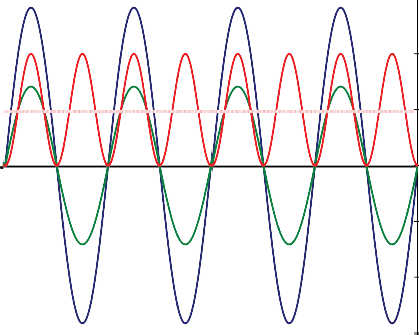
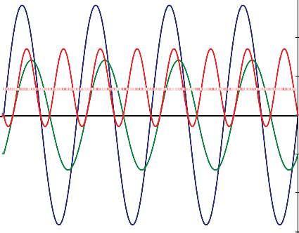
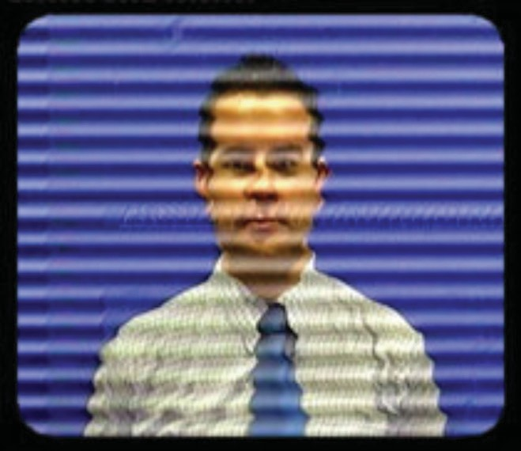
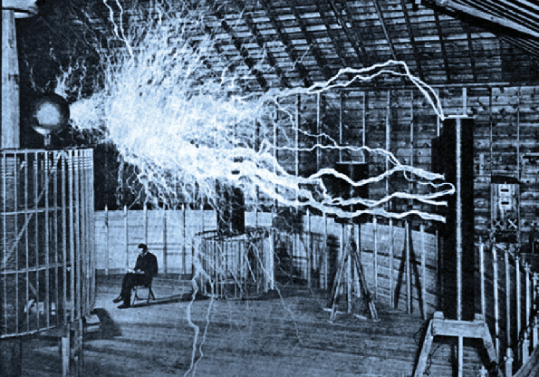
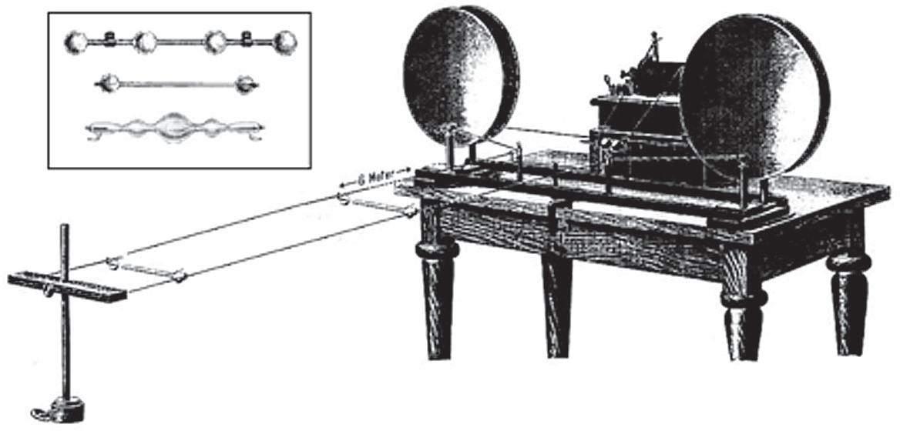
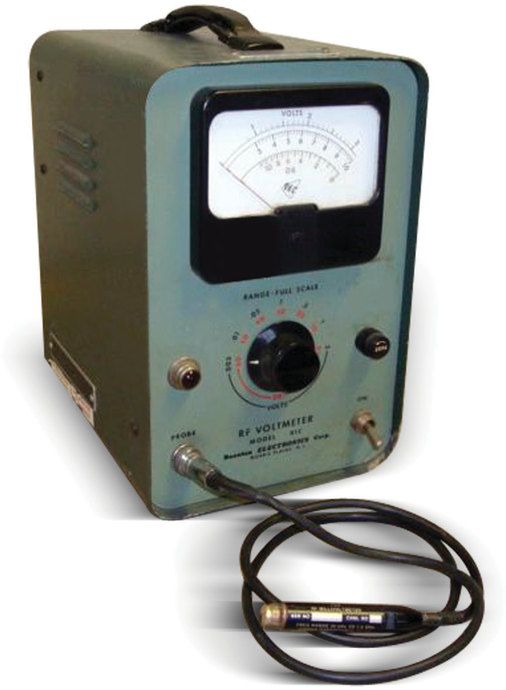

Section 1: RF and Microwave Power Measurement Fundamentals

The nuts, the bolts, and the lightning bugs.
RF power measurement is older than the vacuum tube and younger than the transistor, which is another way of saying it has been around long enough to accumulate a lot of clever ideas and a few bad habits. The subject matters because every wireless link, every radar return, every medical imager, every microwave oven, and every satellite downlink depends on knowing how much signal is actually there.
In this first section we build the foundation. We will talk about what RF power actually is, why you should care about measuring it, and how engineers have solved the problem over the last century and a half. Then we walk through the families of sensor technology you are likely to meet on a modern bench: thermal sensors, diode detectors, receiver-based designs, monolithic ICs, and direct RF sampling. We finish by unpacking the three flavors of power that matter for modulated signals, namely CW, average, and peak, and we will show why bandwidth and dynamic range quietly decide which flavor you are actually measuring.
By the end of Section 1 you should be able to look at a signal and a sensor and tell whether they belong together. That alone is worth the price of the book.
Chapter 1: Power Measurement Basics
1.1 What Is Power?
In physics terms, power is the transfer rate of energy per unit time. Just as energy comes in many flavors (kinetic, potential, heat, electrical, chemical), so does power. A mechanical definition of energy is force multiplied by distance: the force moving an object multiplied by the distance it travels.
Energy = Force × Distance
To get the power, or the rate at which that energy is transferred, we divide energy by the time taken to perform the move. Since distance per unit time is velocity, mechanical power is often expressed as force times velocity.
Power = Force × Distance / Time = Force × Velocity
In electrical terms, force equates to voltage, sometimes called Electromotive Force or EMF. Voltage describes how much "pressure" the electrons are under. Velocity is analogous to current, which is charge (number of electrons) per unit time.
Power (electrical) = EMF × Current
EMF is typically measured in volts, and current is typically measured in amperes. One ampere is one coulomb of charge (6.2 × 10^18 electrons) per second. Multiply current by voltage and you get power in watts.
Watts = Volts × Amps
When voltage and current are both steady, the average power is easy. Multiply average volts by average amps and you are done. But most real signals are not steady. Alternating current, by definition, is a moving target. To get the real average power of an AC waveform, you have to compute the instantaneous power at every point and average over one or more complete cycles.
Limit the discussion to sinusoidal AC and a clean pattern emerges. Power fluctuates in step with voltage and current. For a purely resistive load, voltage and current are in phase: both positive together, both negative together. Multiplying two negatives yields a positive, so the instantaneous power is always positive. The signal is steadily delivering energy to the load (Figure 1.3).
Now shift the current with respect to the voltage. There will be moments when one is positive and the other is negative, and at those moments the instantaneous power is actually flowing backward, from the load to the source. This reduces the average power even though the magnitudes of voltage and current have not changed. Your load is receiving less energy than a voltmeter alone would lead you to believe (Figure 1.4).
This is the first reason power measurement is a science of its own. Voltage and current do not tell the whole story. A direct power measurement, in which the signal is applied to a precisely known termination that keeps voltage and current nearly in phase, is the cleanest answer. If the termination is precise enough, you can either measure the voltage across it and compute power, or you can measure the heating effect on the load directly. Both approaches show up later in this book.
Engineer's corner. When a colleague says "the signal is 1 volt," ask whether they mean peak, RMS, peak-to-peak, or average rectified. Four different numbers. Four different watts into a 50-ohm load. Same "1 volt." This is why we measure power.


1.2 Why Measure Power?
The obvious question: why not just measure voltage? At DC, and at low audio frequencies, you absolutely can. Current and voltage are easy to pin down. You can pull a scope out and call it a day.
The moment frequencies climb above a few megahertz, life gets harder.
As signals approach microwave frequencies, wavelengths in the conductor shrink to the size of your cable connector. Reflections, standing waves, and impedance mismatches all become significant error sources. A well-designed power detector fences those errors off and lets you measure amplitude repeatably. For this reason, power is the accepted amplitude currency of the RF and microwave world.
There are many reasons to measure RF power. The short list is proof of design, regulatory compliance, safety, system efficiency, and component protection. The long list runs into the thousands.
Regulatory. In communication and wireless industries, transmitted power is almost always near the top of the specification sheet. The FCC and its international cousins place strict ceilings on radiated power in every band, because one transmitter's gain is another receiver's headache. The practical rule is usually a maximum power delivered to the antenna rather than a truly radiated figure, because delivered power is what you can actually measure.
Spectral hygiene. If two transmitters share a band and a city, their receivers have a harder job sorting them out when one overwhelms the other. Broadcast licenses pin down transmit power precisely so that neighboring stations can co-exist.
Cellular capacity. Modern cellular protocols rely on careful power control. Multiple handsets may be transmitting to the same base station at the same time. If one hand-held "steps on" the others, the base station cannot decode them. Every phone, constantly, is running open-loop and closed-loop power control so that all signals arrive at the base station with roughly equal amplitudes. Without that, the cell simply stops working.
Safety. Too much RF power is dangerous. Microwave ovens burn flesh just as well as they cook dinner. Broadcast and radar transmitters operate at power levels that can be hazardous to maintenance personnel if shielding is not respected. Even low-power devices, such as cell phones, come under periodic biological scrutiny. Safety limits exist, and the only way to verify compliance is to measure.
Component protection. Any active device can be overloaded. Too much steady-state power heats passive and active components alike. Too much instantaneous peak power overstresses semiconductors and can cause arcing in connectors, cables, and dielectrics. But even at levels well below the damage threshold, too much power causes clipping, distortion, and data loss. Too little power drops signals into the noise and has the same effect. Power measurement is how you stay in the Goldilocks zone.

Pro tip. Before trusting any single measurement, ask yourself two questions: does my sensor bandwidth cover my signal bandwidth, and does my sensor dynamic range cover my signal's peak-to-average ratio? Answer those first, and half the common measurement errors disappear.
1.3 A Brief History of Power Measurement
Wireless engineering is not a new profession, and neither is the headache of measuring what comes out the end of the antenna.
Since the late 1800s, when Nikola Tesla first demonstrated wireless transmission, there has been a need to characterize the output of RF circuits. Tesla himself was often operating at megawatt levels. His working "power meter" was the length of the arcs he could produce. There was little incentive to try a contact measurement, for obvious reasons.
Around 1888, an Austrian physicist named Ernst Lecher developed the "wires" technique for measuring the frequency of an RF or microwave oscillator. The apparatus, often called Lecher Wires, consisted of two parallel conductors a constant distance apart with a sliding short between them. The pair formed a transmission line. By moving the short, Lecher created standing waves and a visible pattern of peaks and nulls. Measuring the physical distance between two peaks gave the wavelength, and from there the frequency.
Lecher originally used an incandescent bulb as his detector. The bulb's brightness at the peaks also gave a rough indication of amplitude. The problem was that the bulb's low and variable filament impedance loaded the line and shifted both the resonant frequency and the oscillator's output. This was fixed by switching to a high-impedance gas-discharge glow tube laid across the wires. The glow tube was sensitive to the electric field and perturbed the line much less. Later, neon bulbs replaced the glow tubes, though the higher striking voltage of neon blurred the null positions. Every improvement traded one problem for another. This is a pattern you will see throughout the history of measurement.



In 1933, H.V. Noble, a Westinghouse engineer, refined Tesla's research and transmitted several hundred watts at 100 MHz across ten meters. The demonstration at the Chicago World's Fair, in the Westinghouse exhibit, caught the public imagination but the practical measurement question remained: how many watts, exactly, had actually made the trip?
The steady march through the twentieth century carried power measurement through thermistor mounts, bolometers, thermocouples, schottky diode detectors, and eventually the modern microcontroller-equipped USB sensor. Each generation shaved another decibel of uncertainty. Berkeley Nucleonics, founded in 1963 as a supplier of fast-risetime pulse generators for nuclear research, watched every one of those generations evolve and has spent the last two decades building instruments that honor what the pioneers got right.
Which brings us, finally, to the equipment on your bench today.

Check your understanding
Three quick questions on the basics of RF power measurement. Your answers save on this device.